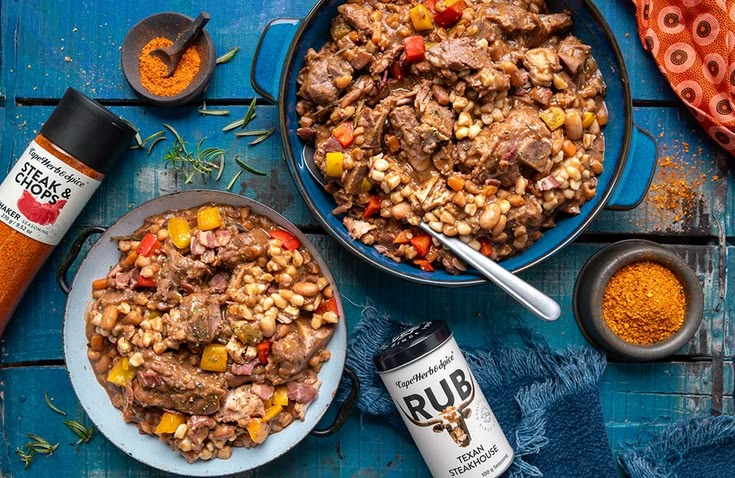

Umngqusho with Smoky Pork

Description
A take on Umngqusho with a smoky infusion of flavour from pork marinated
in Smokehouse BBQ Rub and Smoky Braai Salt, enhanced with vibrant
peppers🤤🥩.
Ingredients
Pork
- 500 g stewing pork with bones
- 2 Tbsp (30 ml) Cape Herb & Spice Smokehouse BBQ Rub
- 1 Tbsp (15 ml) Cape Herb & Spice Steak & Chops Shaker
- 1 Tbsp (15 ml) olive oil
Umngqusho
- 1 C (250 ml) samp
- 1 C (250 ml) dried red speckled sugar beans
- 3 garlic cloves, minced
- 1 yellow pepper, diced
- salt and freshly ground black pepper, to taste
- 1 C (250 ml) dry red wine
- 10 g fresh coriander, chopped
- 10 g fresh parsley, chopped
Steps
For 🐖 aka 'Pork'
-
In a large container, combine the Cape Herb & Spice Smokehouse BBQ Rub
and the Steak & Chops Shaker seasoning with the oil. Add the stewing
pork to the container and rub this mixture all over the meat. Cover and
refrigerate for at least 1 hour, or overnight for best results.
For Umngqusho
-
Add the samp to a bowl and rinse the kernels under cold water. Soak the
kernels in water for at least 6 hours, or overnight. Repeat this process
for the sugar beans, using a separate bowl.
-
Heat the olive oil in a large pot or Dutch oven over medium-high heat.
Add the marinated pork chunks and sear until browned on all sides.
Remove the pork from the pot and set aside.
-
Using the same pot, add the diced bacon and cook until crispy and
rendered. Remove and set aside, leaving the rendered fat in the pot. Add
another splash of olive oil to the pot if needed.
-
Sauté the chopped onion in the bacon fat until translucent, about 5
minutes. Add the minced garlic and cook for another minute. Add the
diced carrot, celery, and peppers. Cook for about 5 minutes, stirring
occasionally.
-
Stir in the tomato paste and cook for 2 minutes. Return the seared pork
to the pot. Pour in the red wine, scraping up any browned bits from the
bottom of the pot. Let it simmer for 2 minutes to reduce slightly.
-
Add the soaked samp and beans, chicken stock, bay leaves, smoked
paprika, cumin, thyme, and salt and pepper to taste. Bring to a boil,
then reduce the heat to low. Cover and let it simmer for 1.5 to 2 hours,
or until the samp and beans are tender and the pork is cooked through.
Stir occasionally.
Home